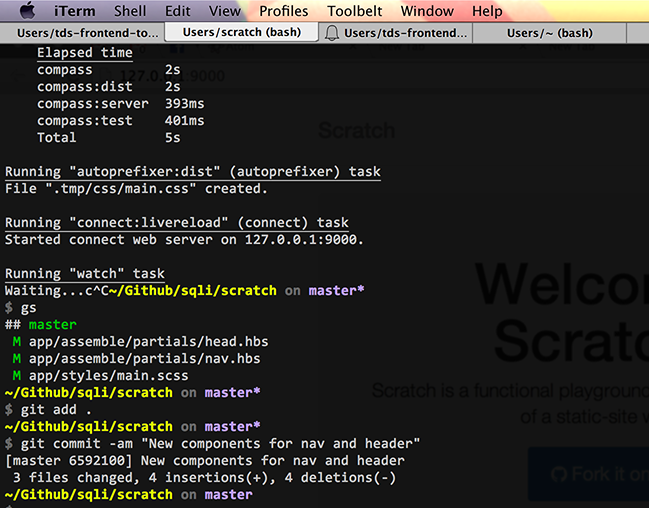
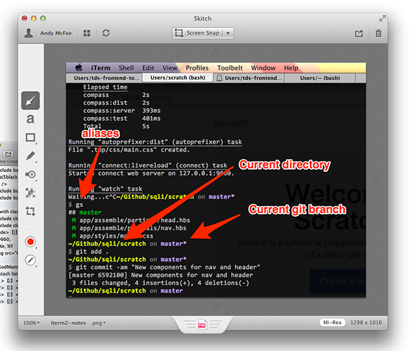

Front-end Stuff
Talk × Drink × Share
by Andy McFee / @andymcfee
Things We'll Cover
- Some general context
- Loving your text editor
- Making the terminal not suck
- Other cool things
Disclaimer:
This is MY personal workflow and toolset. I'm not telling or even really suggesting that you use all these tools, but merely advocating for being passionate about your personal workspace.
Some context
I'm a Mac guy.
sorry PC nerds
And I'm a front-end developer
And sometimes a UX designer
And sometimes an agile advocate
So yeah, I iterate on things. A lot. Including my tools and process.
Sublime Text 3

But I may switch to Atom...
Atom
Actually I switched to Atom in the middle of preparing this talk.
iTerm 2
And a bunch of browsers!
See Dock
Know Thy Editor
These are all great editors
Sublime Text, Atom, VIM...
...but I would avoid Coda and other closed-source editors without the ability to add plugins.
Install plugins!
First, install the Sublime Package Control
Then use it to install:
Emmet
Let's go play with this Emmet Cheatsheet in Sublime...
Customize it!
Just be comfortable!
Most/all of these things are available for any text editor you choose, so be sure to have something you enjoy!
Fear Not the Terminal
actually, you should fear this.
But this isn't so bad!
iTerm 2 for Mac (Free)
Let's break things down...
How, you ask?
Dotfiles!
Configuring your dotfiles is essential to creating a good experience in the terminal.
Question: how many of you have ever modified their .bash_profile or .bashrc?
But what do I do in the terminal?
Git should always be done in the terminal.
I know I said I wasn't going to tell you what you should and shouldn't do in this talk, but really, you should be using git from the command line. It's really not so bad. Set up some aliases!
Other Terminal Honorable Mentions
Other Essetial Cool Things
Alfred
Mac Only
My app launcher.
BetterTouchTool
Mac-specific
Keystroke and Gesture mapper.
aText
Mac-specific
Text expander.
Skitch
Mac-specific
Screenshoter.
Ghostlab
Multi-device testing.
Just scratching the surface...
Questions?